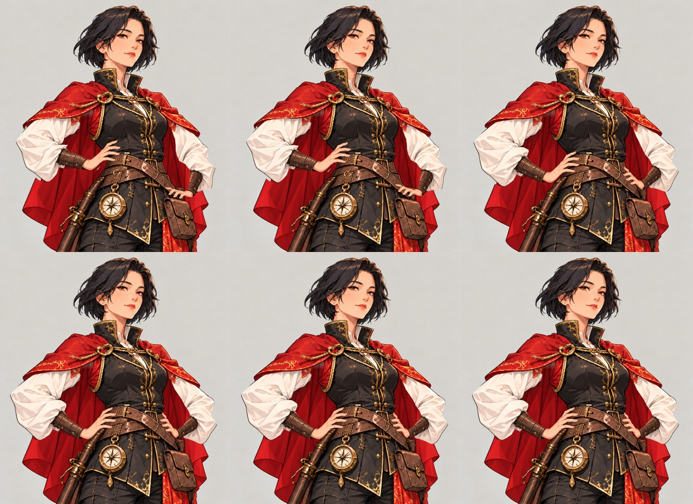

05 自豪 · 二维绑定样片
3 秒 · 24 fps · 1202 × 1310。右侧仅补 1 像素满足视频编码要求，人物画稿不缩小。
固定画稿驱动肩、肘、腕，手掌整体旋转和平移；衣袖随手臂变形，下摆小幅收摆。没有使用视频生成模型重绘中间帧，也没有把整幅关键图交叉淡化。
当前范围：从抬手中间姿态移至腰侧，结尾保持叉腰。笑容沿用目标图；尚未接入最初站姿，也未制作笑容从无到有的变化。这是绑定动作检查版，袖口边缘和接触位置仍可精修，暂未放入 Unity 正式资源。
关键帧与检查记录

固定区域逐帧检查 · 制作说明 · 静态关键姿势